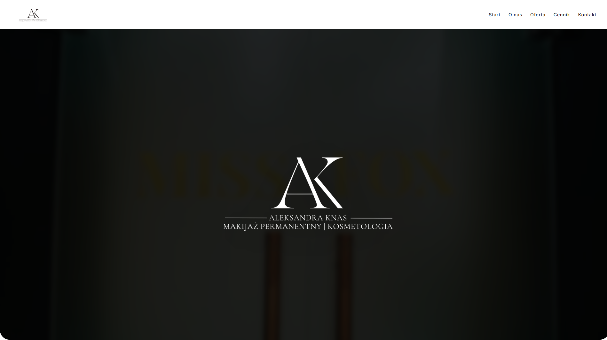
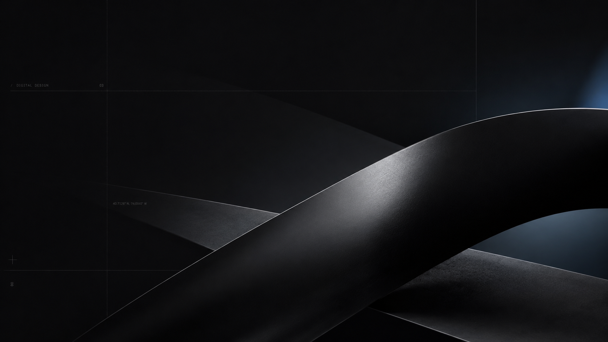

Salon beauty i usługi estetyczne.
Case study
Glam Studio — strona internetowa dla salonu beauty.
Strona dla marki beauty, która ma wyglądać estetycznie, pokazywać ofertę i prowadzić użytkownika do zapisu lub kontaktu.

Pokazać ofertę, klimat marki i ułatwić zapis.
Delikatny wygląd, prosta struktura i szybka ścieżka kontaktu.
Założenie
W beauty estetyka strony musi wspierać zapis, a nie tylko dobrze wyglądać.
Strona salonu powinna budować klimat, ale nie może zgubić najważniejszego celu: użytkownik ma szybko zobaczyć ofertę i wiedzieć, jak umówić wizytę.
Problem
Ładna strona bez jasnej oferty nie sprzedaje.
W branży beauty wygląd ma ogromne znaczenie, ale użytkownik nadal potrzebuje konkretów: usług, zakresu, kontaktu i prostego przejścia do zapisu.
Rozwiązanie
Projekt łączy estetykę z prostą ścieżką decyzji.
Strona prowadzi przez klimat marki, najważniejsze usługi i kontakt. Zamiast przeładowywać użytkownika, daje mu szybki dostęp do tego, po co przyszedł.
Mobile
Widok mobilny musiał być lekki i szybki.
Klientki często trafiają na salon z Instagrama, Google lub polecenia. Dlatego mobile został potraktowany jako główny scenariusz korzystania ze strony.

Kierunek
Strona salonu beauty ma być delikatna wizualnie, ale konkretna w prowadzeniu do zapisu.
Zakres
Co zostało dopracowane na stronie?
Projekt skupiał się na estetycznym odbiorze, czytelnej ofercie i prostym kontakcie.
Pierwsze wrażenie
Hero i styl wizualny zostały dopasowane do klimatu salonu beauty.
Oferta usług
Usługi są pokazane w prostych sekcjach, bez nadmiaru tekstu i rozproszenia.
CTA do zapisu
Przyciski i kontakt prowadzą użytkownika do wykonania kolejnego kroku.
Social proof
Strona może być rozwijana o opinie, realizacje i efekty zabiegów.
Struktura
Najważniejsze sekcje
- hero z klimatem marki
- oferta usług beauty
- sekcja o salonie
- kontakt i przejście do zapisu
- wersja mobilna pod użytkownika z social mediów
Efekt
Co zyskuje klient?
- estetyczna prezentacja salonu
- prostsza ścieżka od wejścia na stronę do zapisu
- lepsze miejsce do kierowania ruchu z Instagrama i Google
- strona gotowa do dalszej rozbudowy o opinie i realizacje
Podobny projekt?
Potrzebujesz strony dla salonu beauty, kosmetologii albo marki osobistej?
Podobny kierunek sprawdzi się dla salonów beauty, stylistek, kosmetologów i usług premium.
Zapytaj o wycenę